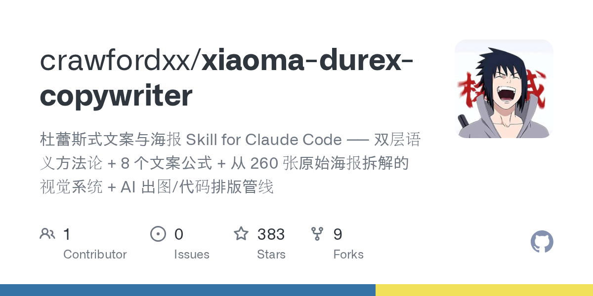

摘要
xiaoma-durex-copywriter 是一個開源的 Claude Code／Claude.ai Skill，主題是把杜蕾斯 2011–2017 年間的廣告創意方法整理成可互動執行的文案與海報流程。
它的重點不是複製成人品牌的表面語氣，而是抽取「雙層語義」與「留白」：表層讓人一眼看懂，里層則讓讀者自行完成品牌或產品的聯想。README 將這套機制延伸到 AI 課程、職場、理財、健身與 SaaS 等非成人品類。
核心方法：雙層語義
README 將一句文案拆成兩層：
- 表層：熱點、節日或日常場景本身，字面上要成立。
- 里層：品牌、產品或想傳達的價值，由讀者自行跳過去理解。
作者主張「點破即死」：如果文案直接解釋里層，讀者自行發現的瞬間就消失了。這是一個適合用來檢查文案是否過度說明的創作框架，但不代表每個品牌或每種受眾都適合使用雙關。
互動式工作流
Skill 觸發後不直接丟出一版答案，而是依序：
- 缺少資訊時先使用預設值，並把假設明確寫出。
- 提供 3–5 個方向，強制區分公式、主體類型與配色。
- 只進行一次選擇提問，合併方案與比例選擇。
- 預設產生不超過 12 字的短文案。
- 先生成靜物主體圖層，再用程式完成排版。
這個設計把「問很多問題」改成「先給具體選項」，適合需要快速產出創意方向的工作流程。
八個文案公式
README 列出以下公式：
- 諧音置換。
- 數字雙關。
- 詞義劫持。
- 場景移植。
- 拆字重組。
- 對仗／宜忌。
- 詩歌體。
- 反向克制。
其中「反向克制」的概念是：當受眾預期品牌耍花招時，突然用很正經、很克制的方式說話，藉此建立人格厚度。README 也提醒此手法不宜過度使用。
AI 出圖與程式排版
README 不建議讓 AI 生圖模型直接處理中文，因為可能產生錯字、缺筆畫或不可控字形。它採取分層管線：
- AI 圖像模型：只產生靜物道具或背景質感，提示詞要求不要有文字。
- Canvas 或 HTML/CSS：負責所有中文文字與版式。
- 程式化輸出：控制畫幅、字級、關鍵字配色與留白。
這個做法的實務優點是改文案時不必重新生成背景圖，也能讓文字排版可重現。不過本篇沒有重新執行 repository 的全部出圖流程，因此不宣稱成品品質已實測。
版權與安全邊界
README 明確說明杜蕾斯原始海報版權歸杜蕾斯／利潔時集團所有，repository 與該公司沒有隸屬或合作關係。它也列出不碰災難、事故、死亡與疾病、不物化女性、不對具體真人做性暗示、不蹭悲情熱點等邊界。
若將方法遷移到其他品牌，仍要另外確認：
- 第三方品牌 logo、包裝與照片是否可用。
- 字體是否有商用授權。
- 參考海報是否只是評論學習，還是會被重製成商業素材。
- 雙關是否會造成性暗示、歧視或對特定真人的傷害。
資訊查核
repository README 支持本文對 Skill 定位、互動流程、8 個公式、視覺管線與安全邊界的描述。至於「260 張海報拆解」與方法效果，本文只記錄為 repository 自述，沒有當作獨立研究結論。
來源證據
- GitHub repository：
https://github.com/crawfordxx/xiaoma-durex-copywriter - README 原始檔：
https://raw.githubusercontent.com/crawfordxx/xiaoma-durex-copywriter/main/README.md - 公開 repository OG 圖：
../assets/public/source-images/2026-08-10-github-xiaoma-durex-copywriter-cover.png
可見資訊
- repository：
crawfordxx/xiaoma-durex-copywriter - repository 描述：杜蕾斯式文案與海報 Skill for Claude Code
- 預設分支：
main - 擷取時 GitHub metadata：383 stars、9 forks、0 open issues、1 contributor
- 最後更新時間為 GitHub API 擷取時的 repository metadata 快照。
參考資料
公開性說明
本文只整理公開 GitHub repository 與 README 的內容，封面使用 GitHub 公開 repository OG 圖；未公開任何私人 repository、token、環境變數或敏感原始資料。